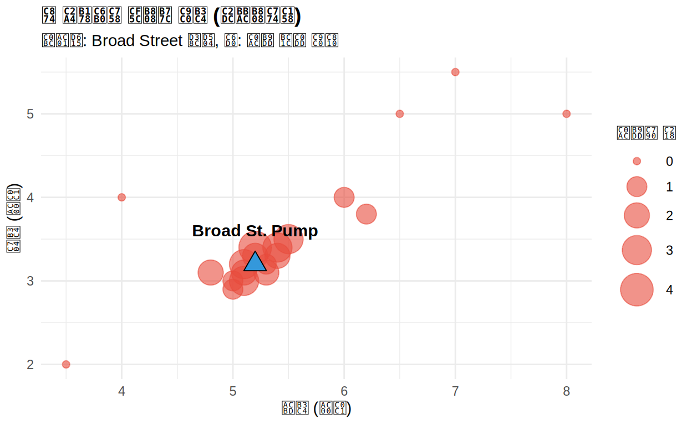
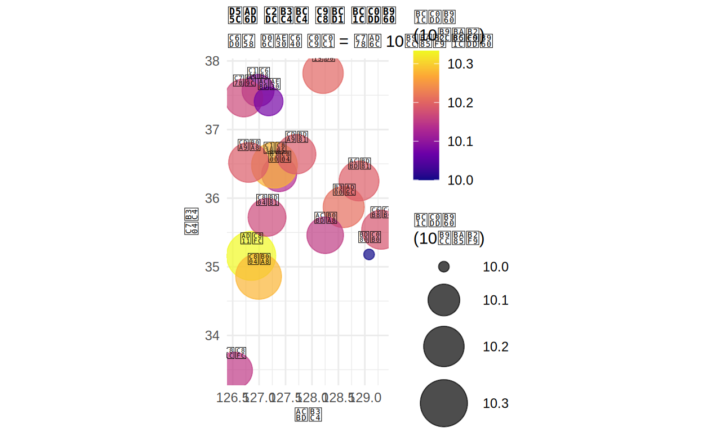
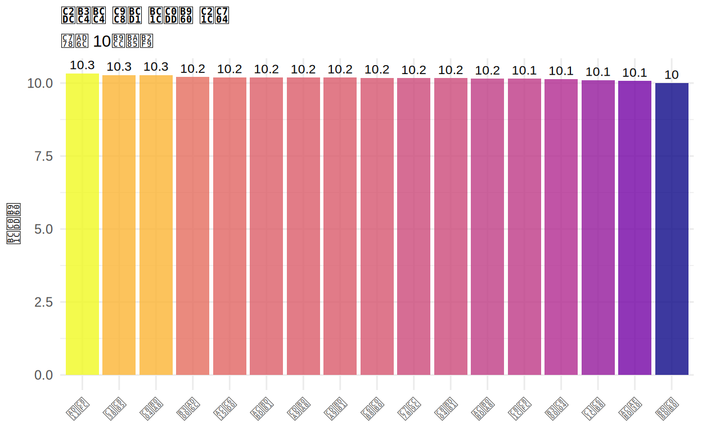
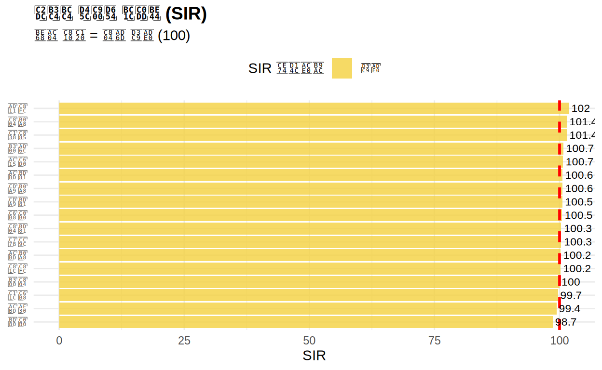
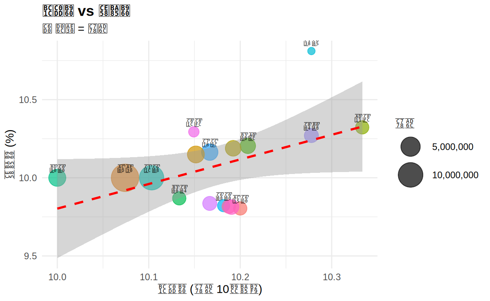
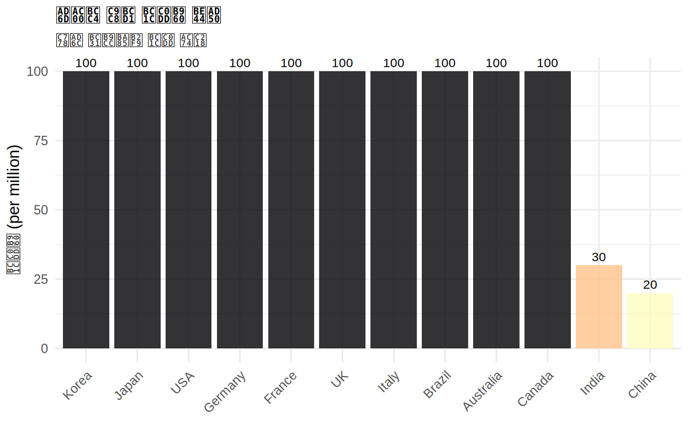

공간 역학 시각화에 오신 것을 환영합니다!
학습 목표:
- 공간 데이터의 기본 개념 이해
- sf 패키지로 공간 데이터 다루기
- 코로플레스 맵 (Choropleth Map) 제작
- 발생률 (Incidence Rate) 계산 및 시각화
- 표준화 발생비 (SIR) 이해 및 적용
이 과정을 마치면:
- 지역별 질병 데이터를 지도에 표현할 수 있습니다
- 인구 표준화의 중요성을 이해합니다
- 공간 패턴을 탐색하고 해석할 수 있습니다
1장: 공간 역학의 기초
공간 역학 (Spatial Epidemiology)이란?
공간 역학은 질병의 지리적 분포와 공간적 패턴을 연구하는 학문입니다.
주요 질문: - 특정 질병이 어느 지역에 집중되어 있는가? - 환경적 요인과 질병 발생의 관계는? - 질병 클러스터(집단 발생)가 있는가?
역사적 사례: 존 스노우의 콜레라 지도 (1854)
존 스노우(John Snow)는 런던 콜레라 발생을 지도에 표시하여 Broad Street 펌프가 원인임을 밝혀냈습니다. 이것이 현대 공간 역학의 시작입니다.
# 가상의 존 스노우 데이터
snow_data <- data.frame(
x = c(5.1, 5.3, 5.2, 5.0, 5.4, 5.5, 6.0, 6.2, 4.8, 5.1,
5.2, 5.3, 5.1, 5.4, 5.0, 6.5, 7.0, 4.0, 8.0, 3.5),
y = c(3.2, 3.1, 3.4, 3.0, 3.3, 3.5, 4.0, 3.8, 3.1, 3.0,
3.3, 3.2, 3.1, 3.4, 2.9, 5.0, 5.5, 4.0, 5.0, 2.0),
deaths = c(3, 2, 4, 1, 2, 3, 1, 1, 2, 3,
2, 1, 2, 3, 1, 0, 0, 0, 0, 0)
)
# 펌프 위치
pump <- data.frame(x = 5.2, y = 3.2, label = "Broad St. Pump")
ggplot() +
geom_point(data = snow_data, aes(x = x, y = y, size = deaths),
alpha = 0.6, color = "#E74C3C") +
geom_point(data = pump, aes(x = x, y = y),
shape = 24, size = 5, fill = "#3498DB", color = "black") +
geom_text(data = pump, aes(x = x, y = y + 0.4, label = label),
fontface = "bold", size = 4) +
scale_size_continuous(name = "사망자 수", range = c(2, 10)) +
labs(
title = "존 스노우의 콜레라 지도 (시뮬레이션)",
subtitle = "삼각형: Broad Street 펌프, 원: 사망 발생 지점",
x = "경도 (가상)", y = "위도 (가상)"
) +
theme_minimal() +
theme(
plot.title = element_text(face = "bold", size = 14),
legend.position = "right"
)
해석: 사망자들이 Broad Street 펌프 주변에 집중되어 있음을 알 수 있습니다!
Quiz: 공간 역학 기초
2장: sf 패키지와 공간 데이터
Simple Features (sf) 소개
sf (Simple Features for R)는 R에서 공간 데이터를 다루는 현대적인 패키지입니다.
주요 특징: - tidyverse와 완벽하게 호환 - GDAL/GEOS 기반으로 안정적 - 데이터프레임처럼 쉽게 다룰 수 있음
좌표계 (CRS)
좌표계 (Coordinate Reference System)는 지구 표면을 평면에 표현하는 방법입니다.
| 좌표계 | EPSG 코드 | 용도 |
|---|---|---|
| WGS84 | 4326 | GPS, 전세계 표준 |
| UTM-K | 5179 | 한국 평면직각좌표 |
| Web Mercator | 3857 | 웹 지도 (Google, Kakao) |
# sf 패키지로 점 데이터 생성
seoul <- st_point(c(126.98, 37.57)) # 서울 좌표
busan <- st_point(c(129.08, 35.18)) # 부산 좌표
# sfc (geometry column) 생성
cities_geom <- st_sfc(seoul, busan, crs = 4326)
# sf 객체로 변환
cities_sf <- st_sf(
name = c("서울", "부산"),
population = c(9700000, 3400000),
geometry = cities_geom
)
# 구조 확인
print(cities_sf)## Simple feature collection with 2 features and 2 fields
## Geometry type: POINT
## Dimension: XY
## Bounding box: xmin: 126.98 ymin: 35.18 xmax: 129.08 ymax: 37.57
## Geodetic CRS: WGS 84
## name population geometry
## 1 서울 9700000 POINT (126.98 37.57)
## 2 부산 3400000 POINT (129.08 35.18)연습문제: sf 객체 생성
대전(위도 36.35, 경도 127.38)과 광주(위도 35.16, 경도 126.85)를 추가하는 코드를 완성하세요.
# 점 생성 (경도, 위도 순서)
daejeon <- st_point(c(___, ___)) # 대전
gwangju <- st_point(c(___, ___)) # 광주
# geometry 생성
more_cities <- st_sfc(daejeon, gwangju, crs = 4326)
# sf 객체 생성
more_cities_sf <- st_sf(
name = c("대전", "광주"),
population = c(1500000, 1500000),
geometry = more_cities
)
print(more_cities_sf)# 경도가 먼저, 위도가 나중입니다!
# 대전: 경도 127.38, 위도 36.35
# 광주: 경도 126.85, 위도 35.16# 점 생성 (경도, 위도 순서)
daejeon <- st_point(c(127.38, 36.35)) # 대전
gwangju <- st_point(c(126.85, 35.16)) # 광주
# geometry 생성
more_cities <- st_sfc(daejeon, gwangju, crs = 4326)
# sf 객체 생성
more_cities_sf <- st_sf(
name = c("대전", "광주"),
population = c(1500000, 1500000),
geometry = more_cities
)
print(more_cities_sf)3장: 점 지도 (Point Map)
점 지도란?
점 지도는 위치 데이터를 점으로 표현하는 가장 기본적인 공간 시각화입니다.
활용 예: - 질병 발생 위치 - 병원/보건소 분포 - 환경 오염원 위치
한국 시도별 발생률 점 지도
# 데이터 확인
head(map_data)# 점 지도 생성
ggplot(map_data, aes(x = lon, y = lat)) +
geom_point(aes(size = incidence_rate, color = incidence_rate), alpha = 0.7) +
geom_text(aes(label = region), vjust = -1.5, size = 3) +
scale_size_continuous(name = "발생률\n(10만명당)", range = c(3, 15)) +
scale_color_viridis_c(name = "발생률\n(10만명당)", option = "plasma") +
coord_fixed(ratio = 1.3) + # 위도/경도 비율 조정
labs(
title = "한국 시도별 질병 발생률",
subtitle = "원의 크기와 색상 = 인구 10만명당 발생률",
x = "경도", y = "위도"
) +
theme_minimal() +
theme(
plot.title = element_text(face = "bold", size = 14),
legend.position = "right"
)
연습문제: 점 지도 커스터마이징
치명률(case_fatality)을 색상으로 표현하는 점 지도를 만드세요.
# map_data에는 incidence_rate와 case_fatality가 있습니다!
ggplot(map_data, aes(x = lon, y = lat)) +
geom_point(aes(size = cases, color = ___), alpha = 0.7) +
geom_text(aes(label = region), vjust = -1.5, size = 3) +
scale_size_continuous(name = "발생 건수", range = c(3, 15)) +
scale_color_gradient(
name = "치명률 (%)",
low = "___",
high = "___"
) +
coord_fixed(ratio = 1.3) +
labs(
title = "시도별 질병 발생 건수와 치명률",
x = "경도", y = "위도"
) +
theme_minimal()# color = case_fatality 를 사용하세요
# low = "yellow", high = "red" 같은 색상을 지정하세요ggplot(map_data, aes(x = lon, y = lat)) +
geom_point(aes(size = cases, color = case_fatality), alpha = 0.7) +
geom_text(aes(label = region), vjust = -1.5, size = 3) +
scale_size_continuous(name = "발생 건수", range = c(3, 15)) +
scale_color_gradient(
name = "치명률 (%)",
low = "yellow",
high = "red"
) +
coord_fixed(ratio = 1.3) +
labs(
title = "시도별 질병 발생 건수와 치명률",
x = "경도", y = "위도"
) +
theme_minimal()Quiz: 점 지도
4장: 발생률 계산과 시각화
발생률 (Incidence Rate)
발생률은 특정 기간 동안 새로 발생한 질병 사례를 인구로 나눈 값입니다.
\[\text{발생률} = \frac{\text{신규 발생 건수}}{\text{인구}} \times 100,000\]
인구 10만명당으로 표준화하는 이유: - 인구가 다른 지역 간 공정한 비교 - 작은 숫자를 피해 해석 용이
발생률 계산 예제
# 발생률 계산 (이미 데이터에 포함됨)
regional_disease %>%
select(region, population, cases, incidence_rate) %>%
arrange(desc(incidence_rate)) %>%
head(5)연습문제: 발생률 계산
다음 데이터로 발생률을 직접 계산해보세요.
# 새로운 데이터
new_data <- data.frame(
city = c("A시", "B시", "C시"),
population = c(500000, 1000000, 250000),
cases = c(50, 80, 40)
)
# 발생률 계산 (인구 10만명당)
new_data <- new_data %>%
mutate(incidence_rate = ___)
print(new_data)# 발생률 = (cases / population) * 100000new_data <- data.frame(
city = c("A시", "B시", "C시"),
population = c(500000, 1000000, 250000),
cases = c(50, 80, 40)
)
new_data <- new_data %>%
mutate(incidence_rate = (cases / population) * 100000)
print(new_data)막대 그래프로 발생률 비교
regional_disease %>%
arrange(desc(incidence_rate)) %>%
mutate(region = factor(region, levels = region)) %>%
ggplot(aes(x = region, y = incidence_rate, fill = incidence_rate)) +
geom_col(alpha = 0.8) +
geom_text(aes(label = round(incidence_rate, 1)),
vjust = -0.5, size = 3) +
scale_fill_viridis_c(option = "plasma") +
labs(
title = "시도별 질병 발생률 순위",
subtitle = "인구 10만명당",
x = NULL, y = "발생률",
fill = "발생률"
) +
theme_minimal() +
theme(
axis.text.x = element_text(angle = 45, hjust = 1),
legend.position = "none",
plot.title = element_text(face = "bold", size = 14)
)
5장: 표준화 발생비 (SIR)
SIR (Standardized Incidence Ratio)란?
표준화 발생비는 관찰된 발생 건수를 기대 발생 건수로 나눈 값입니다.
\[\text{SIR} = \frac{\text{관찰된 건수 (Observed)}}{\text{기대 건수 (Expected)}} \times 100\]
해석: - SIR = 100: 전국 평균과 동일 - SIR > 100: 전국 평균보다 높음 (주의 필요) - SIR < 100: 전국 평균보다 낮음
SIR 계산 과정
# 1. 전국 평균 발생률 계산
national_rate <- sum(regional_disease$cases) / sum(regional_disease$population) * 100000
cat("전국 평균 발생률:", round(national_rate, 2), "(인구 10만명당)\n")## 전국 평균 발생률: 10.13 (인구 10만명당)# 2. 기대 발생 건수 계산
regional_sir <- regional_disease %>%
mutate(
expected_cases = (population / 100000) * national_rate,
SIR = (cases / expected_cases) * 100
)
# 3. 결과 확인
regional_sir %>%
select(region, cases, expected_cases, SIR) %>%
arrange(desc(SIR)) %>%
head(5)SIR 시각화
# SIR 카테고리 추가
regional_sir <- regional_sir %>%
mutate(
SIR_category = case_when(
SIR < 90 ~ "매우 낮음",
SIR < 98 ~ "낮음",
SIR < 102 ~ "평균",
SIR < 110 ~ "높음",
TRUE ~ "매우 높음"
),
SIR_category = factor(SIR_category,
levels = c("매우 낮음", "낮음", "평균", "높음", "매우 높음"))
)
# 막대 그래프
ggplot(regional_sir, aes(x = reorder(region, SIR), y = SIR, fill = SIR_category)) +
geom_col(alpha = 0.8) +
geom_hline(yintercept = 100, linetype = "dashed", color = "red", size = 1) +
geom_text(aes(label = round(SIR, 1)), hjust = -0.1, size = 3) +
coord_flip() +
scale_fill_manual(
values = c("매우 낮음" = "#2ECC71", "낮음" = "#82E0AA",
"평균" = "#F4D03F", "높음" = "#E67E22", "매우 높음" = "#E74C3C"),
name = "SIR 카테고리"
) +
labs(
title = "시도별 표준화 발생비 (SIR)",
subtitle = "빨간 점선 = 전국 평균 (100)",
x = NULL, y = "SIR"
) +
theme_minimal() +
theme(
plot.title = element_text(face = "bold", size = 14),
legend.position = "top"
)## Warning: Using `size` aesthetic for lines was deprecated in ggplot2 3.4.0.
## ℹ Please use `linewidth` instead.
## This warning is displayed once every 8 hours.
## Call `lifecycle::last_lifecycle_warnings()` to see where this warning was
## generated.
연습문제: SIR 계산
아래 코드를 완성하여 SIR을 계산하세요.
# 데이터
practice_data <- data.frame(
region = c("X구", "Y구", "Z구"),
population = c(300000, 500000, 200000),
cases = c(35, 45, 30)
)
# 1. 전체 평균 발생률 계산
total_cases <- sum(practice_data$cases)
total_pop <- sum(practice_data$population)
avg_rate <- ___ / ___ * 100000
# 2. SIR 계산
practice_data <- practice_data %>%
mutate(
expected_cases = ___,
SIR = ___
)
print(practice_data)# avg_rate = total_cases / total_pop * 100000
# expected_cases = (population / 100000) * avg_rate
# SIR = (cases / expected_cases) * 100practice_data <- data.frame(
region = c("X구", "Y구", "Z구"),
population = c(300000, 500000, 200000),
cases = c(35, 45, 30)
)
total_cases <- sum(practice_data$cases)
total_pop <- sum(practice_data$population)
avg_rate <- total_cases / total_pop * 100000
practice_data <- practice_data %>%
mutate(
expected_cases = (population / 100000) * avg_rate,
SIR = (cases / expected_cases) * 100
)
print(practice_data)Quiz: SIR
6장: 발생률 vs 치명률 분석
발생률과 치명률의 관계
발생률 (Incidence Rate): 인구 대비 새로운 감염 비율 치명률 (Case Fatality Rate, CFR): 감염자 중 사망자 비율
두 지표를 함께 분석하면 질병의 전파력과 치명성을 동시에 파악할 수 있습니다.
ggplot(regional_disease, aes(x = incidence_rate, y = case_fatality)) +
geom_point(aes(size = population, color = region), alpha = 0.7) +
geom_smooth(method = "lm", se = TRUE, color = "red", linetype = "dashed") +
geom_text(aes(label = region), vjust = -1, size = 3, check_overlap = TRUE) +
scale_size_continuous(name = "인구", labels = scales::comma, range = c(3, 12)) +
labs(
title = "발생률 vs 치명률",
subtitle = "원 크기 = 인구",
x = "발생률 (인구 10만명당)",
y = "치명률 (%)",
color = "시도"
) +
theme_minimal() +
theme(
plot.title = element_text(face = "bold", size = 14),
legend.position = "right"
) +
guides(color = "none")## `geom_smooth()` using formula = 'y ~ x'
연습문제: 산점도 해석
아래 코드를 수정하여 발생 건수와 사망 건수의 관계를 시각화하세요.
# 힌트: x = cases, y = deaths
ggplot(regional_disease, aes(x = ___, y = ___)) +
geom_point(aes(size = population), color = "#3498DB", alpha = 0.7) +
geom_smooth(method = "lm", se = TRUE, color = "red") +
geom_text(aes(label = region), vjust = -1, size = 3, check_overlap = TRUE) +
scale_size_continuous(name = "인구", labels = scales::comma) +
labs(
title = "발생 건수 vs 사망 건수",
x = "발생 건수",
y = "사망 건수"
) +
theme_minimal() +
theme(plot.title = element_text(face = "bold"))ggplot(regional_disease, aes(x = cases, y = deaths)) +
geom_point(aes(size = population), color = "#3498DB", alpha = 0.7) +
geom_smooth(method = "lm", se = TRUE, color = "red") +
geom_text(aes(label = region), vjust = -1, size = 3, check_overlap = TRUE) +
scale_size_continuous(name = "인구", labels = scales::comma) +
labs(
title = "발생 건수 vs 사망 건수",
x = "발생 건수",
y = "사망 건수"
) +
theme_minimal() +
theme(plot.title = element_text(face = "bold"))7장: 국가 간 비교
국가별 발생률 비교
공간 역학은 국내뿐 아니라 국가 간 비교에도 활용됩니다.
# 국가별 발생률 (인구 백만명당)
world_disease %>%
arrange(desc(incidence_rate)) %>%
mutate(country = factor(country, levels = country)) %>%
ggplot(aes(x = country, y = incidence_rate, fill = incidence_rate)) +
geom_col(alpha = 0.8) +
geom_text(aes(label = round(incidence_rate, 0)), vjust = -0.5, size = 3) +
scale_fill_viridis_c(option = "magma", direction = -1) +
labs(
title = "국가별 질병 발생률 비교",
subtitle = "인구 백만명당 발생 건수",
x = NULL, y = "발생률 (per million)",
fill = "발생률"
) +
theme_minimal() +
theme(
axis.text.x = element_text(angle = 45, hjust = 1),
legend.position = "none",
plot.title = element_text(face = "bold", size = 14)
)
연습문제: 국가 순위
발생률 상위 5개국을 필터링하여 시각화하세요.
# 상위 5개국 필터링
top5 <- world_disease %>%
arrange(desc(incidence_rate)) %>%
head(___)
# 시각화
ggplot(top5, aes(x = reorder(country, incidence_rate), y = incidence_rate)) +
geom_col(fill = "#E74C3C", alpha = 0.8) +
coord_flip() +
labs(
title = "발생률 상위 5개국",
x = NULL, y = "발생률 (per million)"
) +
theme_minimal()top5 <- world_disease %>%
arrange(desc(incidence_rate)) %>%
head(5)
ggplot(top5, aes(x = reorder(country, incidence_rate), y = incidence_rate)) +
geom_col(fill = "#E74C3C", alpha = 0.8) +
coord_flip() +
labs(
title = "발생률 상위 5개국",
x = NULL, y = "발생률 (per million)"
) +
theme_minimal()8장: 심화 퀴즈 🧠
코드 결과 예측 퀴즈
오류 찾기 퀴즈
빈칸 채우기 퀴즈
공간 역학 심화 퀴즈
종합 퀴즈
학습 완료!
이번 과정에서 배운 내용:
- 공간 역학의 기초: 질병의 지리적 분포 연구
- sf 패키지: R에서 공간 데이터 다루기
- 점 지도: 위치 데이터 시각화
- 발생률 계산: 인구 표준화의 중요성
- SIR (표준화 발생비): 공정한 지역 비교
- 발생률 vs 치명률: 다차원 분석
다음 단계:
- Chapter 5: 임상통계 시각화 (생존 분석, Forest Plot)
- 실습 프로젝트: 실제 한국 지도 데이터로 코로플레스 맵 제작
🏆 학습 결과 확인
📊 Part II-2: 공간 역학 시각화
<p style="margin: 0; font-size: 0.9em;">정답 수</p>
<p style="margin: 5px 0 0 0; font-size: 2em; font-weight: bold;" id="correct-count">0</p><p style="margin: 0; font-size: 0.9em;">총 퀴즈</p>
<p style="margin: 5px 0 0 0; font-size: 2em; font-weight: bold;" id="total-count">0</p><p style="margin: 0; font-size: 0.9em;">점수</p>
<p style="margin: 5px 0 0 0; font-size: 2em; font-weight: bold;" id="score-percent">0%</p>※ 퀴즈를 풀면 자동으로 점수가 업데이트됩니다